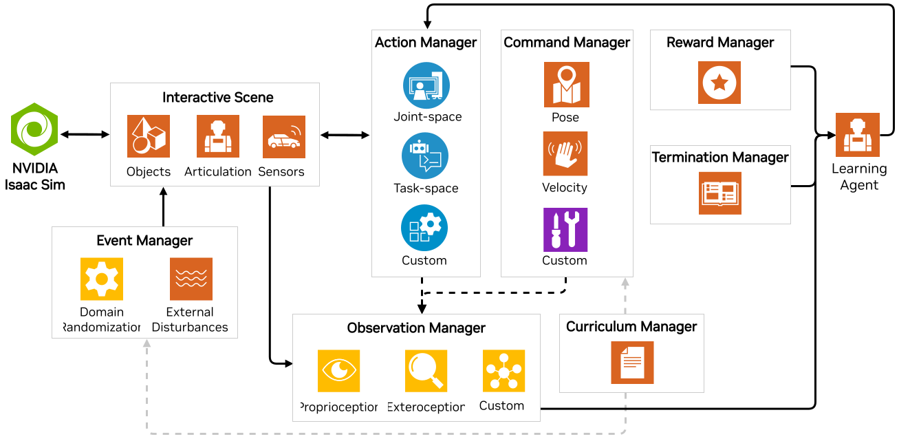

[IsaacLab] 03. Task 설계 구조의 이해
이 문서에서는 IsaacLab 학습 프레임워크 구조 이해를 위한 기본적인 내용을 설명합니다. 본 문서는 Task Design Workflows 문서를 참고하여 작성되었습니다.
Introduction
작업(Task)은 특정 에이전트(로봇)를 위한 관찰(observations)과 행동(actions)의 인터페이스를 가진 환경(environment)으로 정의됩니다. 환경은 에이전트에게 현재의 관찰 데이터를 제공하고, 에이전트의 행동을 실행시켜 시뮬레이션을 시간 순으로 진행합니다. 로봇이 어떤 작업을 수행하든, 또는 그 작업을 어떤 방식으로 학습하든 간에, 환경 내 로봇 시뮬레이션의 공통된 구성 요소들이 존재합니다.
이는 특히 강화학습(Reinforcement Learning, RL)에서 더욱 그러합니다. 벡터화된 GPU 시뮬레이션에서 행동, 관찰, 보상 등을 관리하는 것은 생각만 해도 어려울 수 있습니다! 이러한 요구를 충족하기 위해 Isaac Lab은 Manager 기반 시스템 내에서 RL 환경을 구축할 수 있는 기능을 제공합니다. 이를 통해 다양한 세부 사항을 적절한 매니저 클래스에 위임할 수 있습니다. 하지만, 개발 중에는 환경에 대한 세밀한 제어가 필요한 경우도 있기 때문에, 시뮬레이션에 직접 접근(Direct interface) 하여 완전한 제어를 가능하게 하는 방식도 함께 제공합니다.
- Manager 기반: 환경은 개별 구성 요소(또는 매니저)로 분해되며, 각 구성 요소는 관찰 계산, 행동 적용, 랜덤화 적용 등의 환경의 다른 측면을 담당합니다. 사용자는 각 구성 요소에 대한 설정 클래스를 정의하고, 환경은 매니저들을 조정하고 그들의 함수를 호출하는 역할을 합니다.
- Direct: 사용자는 단일 클래스를 정의하여 전체 환경을 직접 구현합니다. 별도의 매니저 없이 이 클래스는 관찰 계산, 행동 적용, 보상 계산을 직접 수행합니다.
이 두 가지 워크플로우에는 각각 장단점이 있습니다.
Manager 기반 워크플로우는 모듈화가 잘 되어 있어, 환경의 다양한 구성 요소들을 손쉽게 교체할 수 있습니다. 이는 환경을 프로토타이핑하거나 다양한 설정을 실험할 때 유용합니다.
반면, Direct 워크플로우는 더 효율적이며, 환경의 로직에 대해 보다 세밀한 제어가 가능합니다. 이는 성능 최적화가 필요하거나 복잡한 로직을 구현할 때 적합합니다.
Manager-Based Environments

- Manager 기반 환경은 작업을 개별적으로 관리되는 구성 요소들로 분해하여 모듈화된 구현을 촉진합니다.
- 각 작업의 구성 요소(예: 보상 계산, 관찰 계산 등)는 Manager에 대한 설정(configuration)으로 지정될 수 있습니다.
- Manager들은 필요에 따라 특정 계산을 실행하는 설정 가능한 함수들을 정의합니다.
- 서로 다른 Manager들을 조정하는 역할은
envs.ManagerBasedEnv클래스를 상속한 환경 클래스가 담당합니다. - 설정 클래스들은 모두
envs.ManagerBasedEnvCfg를 상속해야 합니다. - 새로운 학습 환경을 개발할 때, 환경을 독립적인 구성 요소들로 분할하는 것이 유리합니다.
- 이 방식은 협업에 효과적이며, 개별 개발자가 환경의 특정 측면에 집중할 수 있게 합니다.
- 개발된 구성 요소들은 하나의 실행 가능한 작업으로 통합될 수 있습니다.
- 예를 들어, 서로 다른 센서 구성을 가진 여러 로봇이 있을 경우, 각 로봇의 센서 데이터를 처리하는 관찰 매니저가 필요할 수 있습니다.
- 팀원들이 보상 설계에 대해 다른 의견을 가질 경우, 각자 자신만의 보상 매니저를 개발하고 교체하거나 실험할 수 있습니다.
이러한 매니저 기반 워크플로우의 모듈성은 복잡한 프로젝트에서 필수적입니다!
강화학습의 경우, 대부분의 구성은 이미 제공되고 있습니다.
일반적으로는, 환경을 envs.ManagerBasedRLEnv로부터 상속받고, 설정을 envs.ManagerBasedRLEnvCfg로부터 상속받아 작성하는 것만으로 충분합니다.
Direct Environments

- Direct 스타일 환경은 전통적인 환경 구현 방식과 유사합니다.
- 하나의 클래스가 보상 함수, 관찰 함수, 재설정 로직 등 모든 구성 요소를 직접 구현합니다.
- 매니저 클래스가 필요 없으며,
envs.DirectRLEnv또는envs.DirectMARLEnv의 API를 통해 작업을 구현합니다. - 모든 Direct 작업 환경은 위 두 클래스 중 하나를 상속해야 합니다.
- 설정 클래스도 필요하며,
envs.DirectRLEnvCfg또는envs.DirectMARLEnvCfg를 상속해야 합니다. - IsaacGymEnvs 및 OmniIsaacGymEnvs에서 이전하는 사용자들에게 익숙한 워크플로우입니다.
- 환경 구현 로직이 매니저에 의해 추상화되지 않아 구현의 투명성을 제공합니다.
- 복잡한 로직 구현이나 개별 구성 요소로 분해하기 어려운 경우에 유리합니다.
- PyTorch JIT 또는 Warp와 같은 최적화 프레임워크를 활용해 성능상의 이점을 제공합니다.
- 대규모 학습 시 환경 내 개별 연산의 최적화가 필요한 경우 유용합니다.
정리 및 요약
| 특징 | Task-based (Manager 기반) | Direct-based |
|---|---|---|
| 🔄 모듈화 | ⭕(환경을 각 구성 요소로 나눔) | ❌(하나의 클래스에 통합) |
| 🔧 구성 요소 교체 용이성 | ⭕(교체 쉬움) | ❌(교체 어려움) |
| 🎛️ 세밀한 제어 | 🔺(제한적) | ⭕(가능) |
| 🤝 협업 | ⭕(협업 유리) | ❌(협업 불리) |
| 🚀 성능 최적화 | 🔺(최적화 제한) | ⭕(JIT, Warp 등 최적화 유리) |
| 🔍 투명성 | 🔺(투명성 낮음) | ⭕(투명성 제공) |
| 🧩 복잡한 로직 구현 | 🔺(복잡한 로직 불리) | ⭕(복잡한 로직 유리) |
이 표는 각 워크플로우의 장단점을 비교하여, 사용자가 필요에 따라 적절한 방식을 선택할 수 있도록 돕습니다.